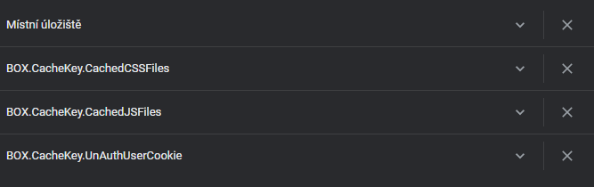

WWW, také pouze zkráceně web, ve volném překladu „celosvětová pavučina“, je označení pro aplikace internetového protokolu HTTP.
Je tím myšlena soustava propojených hypertextových dokumentů.Služba se zrodila se v roce 1989 v evropském vědeckém centru CERN v Ženevě díky Timu Berners-Lee.
Za hypertext označujeme takový text, který obsahuje propojení na jiné texty pomocí tzv. hypertextových odkazů. Ve službě WWW jsou realizovány jako tzv. URL odkazy.
Služba je založena na spolupráci WWW klientů s WWW serverem. Prvním komerčním prohlížečem webových stránek byl na počátku 90. let minulého století Mosaic.
Při jejich spolupráci fungují následující mechanismy: komunikační protokol HTTP, pomocí něhož WWW klient a WWW server komunikují, jazyk HTML (HyperText Markup Language), definující formát WWW stránek, které server vrací klientovi.
World Wide Web je mezinárodní konsorcium jehož členové společně s veřejností vyvíjejí webové standardy pro WWW. Konsorciu předsedá Tim Berners-Lee.
WWW - Otázky a odpovědi
Jakou roli plní webový server? Uveďte příklady webových serverů.
Webový server je připojen k počítačové síti a přijímá požadavky v souladu s protokolem HTTP. Tyto požadavky vyřizuje a počítač, který vznesl, vrací odpoveď.
- Apache
- NGINX
- Microsoft Internet Information Server
Jak se nazývá program označovaný jako webový klient? Co je jeho úkolem?
Klient je program, který komunikuej s uživatelem a na základě jeho pokynů se obrací na jednotlivé servery, získavá od nich data a zobrazuje je. Nejběžnější klienti jsou:
- Google Chrome
- Mozilla
- Safari
Co je HTTP?
HTTP (HyperText Transfer Protocol) je internetový protokol určený pro komunikaci s WWW servery. Slouží pro přenos hypertextových dokumentů ve formátu HTML, XML, i jiných typů souborů. Komunikace je charakteru požadavek - odpověď.
Vypište do tabulky stavové kódy HTTP.
| Stavové kódy | Info | |
|---|---|---|
| 1xx | Informační zpráva | |
| 2xx | Úspěšné vyřazení požadavku | |
| 3xx | problémy spojené s přesměrováním | |
| 4xx | chyby souvísející s vyřízením požadavku | |
| 5xx | Interní chyby serveru | |
Proč se stále častěji využívá protokol HTTPS?
HTTPS (HTTP se zabezpečením) je nadstavba protokolu HTTP, která poskytuje zvýšenou bezpečnost před odposloucháváním či podvržením dat. Pro komunikaci pomocí HTTPS musí nejdříve server vlastnit certifikát. Certifikát musí být podepsán tzv. certifikační autoritou, která zaručí, že vlastník certifikátu se nevydává za nikoho jiného. Webové prohlížeče jsou většinou vybaveny podpisovými certifikáty největších podpisových autorit.
Výhody HTTPS:
- možnost ověření identity
- důvěrnost přenášených dat
- integrita obsahu
Vysvětlete zkratku URL a připojte pět různých příkladů URL odkazů.
URL je řetězec znaků s definovanou strukturou, který slouží k přesné specifikaci umístění zdrojů informací (ve smyslu dokument nebo služba) na Internetu. URL definuje doménovou adresu serveru, umístění zdroje na serveru a protokol, kterým je možné zdroj zpřístupnit.
Příklady:
Co jsou a k čemu slouží tzv. cookies? Připojte obrázek s cookies.
Jako cookie (anglicky koláček, oplatka, sušenka) se v protokolu HTTP označuje malé množství dat, která WWW server pošle prohlížeči a ten je uloží na počítači uživatele. Při každé další návštěvě téhož serveru pak prohlížeč tato data posílá zpět serveru. Cookies běžně slouží k rozlišování jednotlivých uživatelů, ukládá se do nich obsah „nákupního košíku“ v elektronických obchodech, uživatelské předvolby apod. Cookie mohou být nebezpečné pro ochranu soukromí. Navštívený web si totiž může ukládat do cookies jakékoliv informace, které o návštěvníkovi shromáždí. Těchto informací se dá posléze i proti vůli návštěvníka zneužívat pro cílenou reklamu, statistické vyhodnocování chování návštěvníků apod.
Vypište přehledně jednotlivé fáze fungování internetových vyhledávačů.
- procházení webových stránek
- indexace (příprava indexu)
- poskytování odpovědí na dotazy
Vysvětlete zkratku HTML a pojem hypertext.
HTML je v informatice název značkovacího jazyka používaného pro tvorbu webových stránek, které jsou propojeny hypertextovými odkazy. Za hypertext označujeme takový text, který obsahuje propojení na jiné texty pomocí tzv. hypertextových odkazů. Ve službě WWW jsou realizovány jako tzv. URL odkazy.